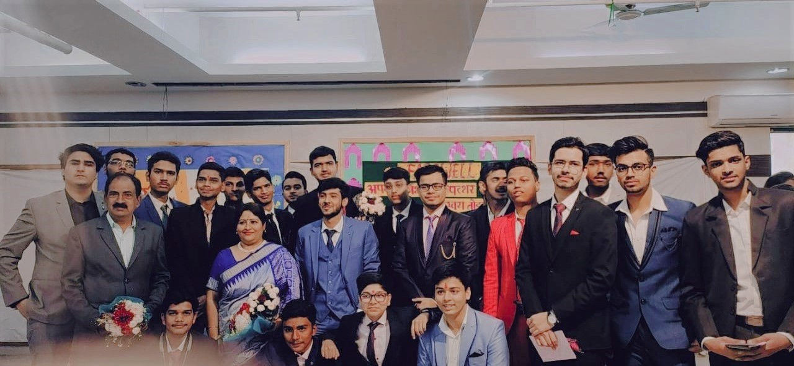

Here's my
Academics
Academics
I did my schooling from Universal Public School, Delhi and passed with a 98+ percentage score in both, High school and Intermediate levels (in All India Certificate Examination(s) conducted by CBSE Board).
A strong inclination towards Mathematics and Physics motivated me to pursue Science as a discipline for higher education and ultimately lead to me being admitted in IIT Kharagpur, one of the most prestigious colleges in the country for engineering enthusiasts. Keeping up with my interest in mathematics and logical problem-solving, I have taken up Computer Science for further studies and look forward to exploring all the avenues this evolving subject has to offer.